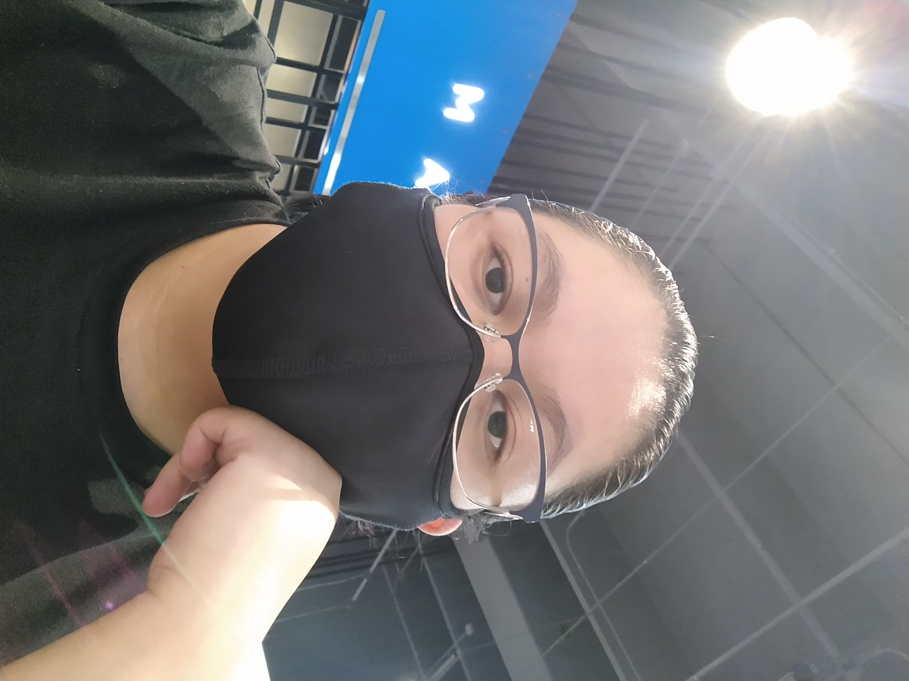

Mi nombre es Jared Idalí

Como ya te habia mencionado mi nombre es Jared Idalí, actualmente estudio el septimo semestre de Diseño Gráfico en la Benemérita Universidad Autónoma de Puebla, nací en el Distrito Federal actualmente Ciudad de México, me he mudado multiples veces lo que me ha permitido conocer diferentes constumbres de la república. Siempre me ha interesado el arte aunque ahora comprendo que el diseño es más una técnica que arte, aunque no se excluyen, mis especializaciones dentro del diseño gráfico son el Marketing y Branding, son las áreas que me incitan a resolver problemas de una manera creativa, ya he trabajado en proyectos pequeños relacionados a estas áreas por lo que puedo asegurar que me veo trabajando en eso, aunque no me opongo a explorar algunas otras.
Me gusta la danza contemporánea, el teatro y la opera aunque no he tenido la oportunidad de incurcionar en alguna de esas disciplinas, por otro lado me agrada el cine más comercional cre que mi género favorito es el cine de suspenso y terror psicológico, aúnque cualquier filme con buena fotografía logra entrenerme aunque la pelicula sea bastante mala. Estos acercamientos me han ayudado a tener referencias para diseñar.
Mi estilo de diseño suele ser conceptual y de estética minimalista, evitando tener muchos elementos o muy detallados, esta materia a representado un reto ya que he tenido algunos problemas con algunas cosas, que no funcione algún enlace, o una imagen mal colocada son alguos de los problemas, pero espero seguir mejorando..
Podría considerar adentrarme más en el diseño de interfaces creo que es bastante interesante y tienen una buena proyección a futuro.